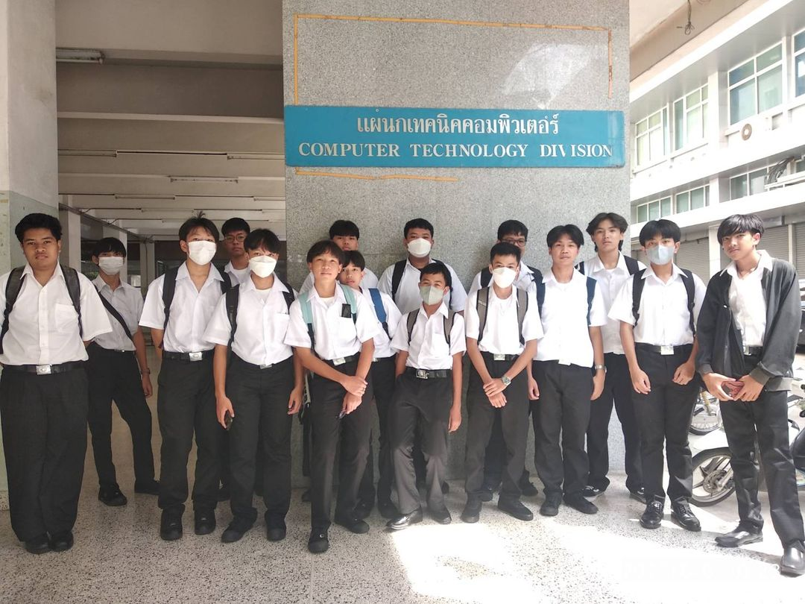

หน้าแรก
เกี่ยวกัสาขาวิชา
หลักสูตร
ห้องปฏิบัติการ
ติดต่อสาขา
ประวัติอย่างย่อ

ปี พ.ศ.2529 เปิดสอนหลักสูตร ประกาศนียบัตรวิชาชีพชั้นสูง (ปวส.) สาขาเทคนิคคอมพิวเตอร์ ซึ่งมุ่งเน้นให้ผู้เรียนมีทักษะ การปฏิบัติงานด้านคอมพิวเตอร์ที่มีความเชี่ยวชาญเฉพาะ แก้ไขปัญหาระบบคอมพิวเตอร์ที่มีความซับซ้อน
ปี พ.ศ.2542 เปิดสอนหลักสูตรครุศาสตร์อุตสาหกรรมบัณฑิต สาขาวิชาวิศวกรรมคอมพิวเตอร์ (ค.อ.บ.วิศวกรรมคอมพิวเตอร์) และหลักสูตรอุตสาหกรรมศาสตรบัณฑิต สาขาเทคโนโลยีคอมพิวเตอร์ (อส.บ.เทคโนโลยีคอมพิวเตอร์)
ปี พ.ศ.2550 เปิดสอนหลักสูตรวิศวกรรมศาสตรบัณฑิต สาขาวิชาวิศวกรรมคอมพิวเตอร์ ทั้งหลักสูตร 4 ปี และหลักสูตรเทียบโอน
ปี พ.ศ.2563 เปิดสอนหลักสูตรประกาศนียบัตรวิชาชีพ (ปวช. เตรียมวิศวฯ) สาขาวิชาช่างเทคนิคคอมพิวเตอร์ (http://www.pre.eng.rmutp.ac.th)
ปี พ.ศ.2567 เปิดสอนหลักสูตรใหม่ หลักสูตรวิศวกรรมศาสตรบัณฑิต สาขาวิชาวิศวกรรมคอมพิวเตอร์ (ต่อเนื่อง) 2 ปี โดยรับผู้สำเร็จการศึกษาระดับ ปวส. หรือปริญญาตรี เพื่อรองรับการ
@CopyRight By Mr.Peeranat Seeprasert 057 TC-RMUTP 2568